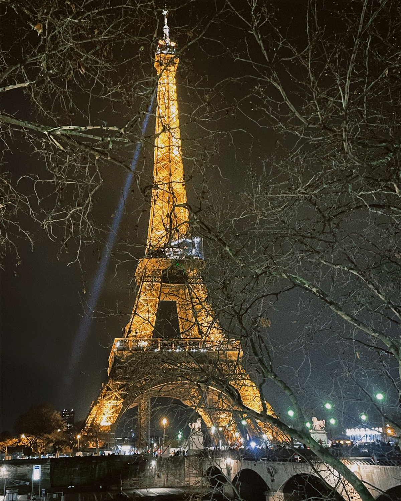
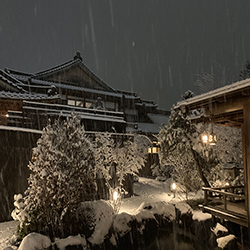

-
Paris, the City of Light, evokes romantic emotions in anyone who has ever visited. This centuries-old city is the most visited city in the world, and for good reason. There is plenty to do in Paris to satisfy travelers of all tastes.
The Eiffel Tower is the most iconic building in Paris The Eiffel Tower is a wrought iron tower that stands 1,063 ft (324 m) tall. It was designed for the Exposition Universelle, a world fair held in Paris in 1889. It's currently the most famous symbol of Paris. It's also the most visited attraction in the world.
Iconic building
- Louvre
- Notre Dame de Paris
- Arc de Triomphe
- Paris Opera House
- Orsay Museum
-
Yamanashi
Yamanashi Prefecture is a prefecture of Japan located in the Chūbu region of Honshu.[1] Yamanashi Prefecture has a population of 817,192(1 January 2019)and has a geographic area of 4,465 km2 (1,724 sq mi).Yamanashi Prefecture borders Saitama Prefecture to the northeast, Nagano Prefecture to the northwest, Shizuoka Prefecture to the southwest, Kanagawa Prefecture to the southeast, and Tokyo to the east.
The natural scenery and cultural sights of Yamanashi are popular destinations for both domestic and international tourists due to the prefecture's proximity to the crowded Tokyo conurbation and ease of access by road and rail. Mount Fuji, the Fuji Five Lakes region, the highland resort region of Kiyosato, the city of Kōfu, the Senga Falls, Koshu wineries, the temple of Erin-ji in Koshu, and the Kuonji Temple at Minobu are a few of the most popular places to visit.
-
Harbin
Harbin, which was originally a Manchu word meaning "a place for drying fishing nets", grew from a small rural settlement on the Songhua River to become one of the largest cities in Northeast China. Founded in 1898 with the coming of the Chinese Eastern Railway, the city first prospered as a region inhabited by an overwhelming majority of the immigrants from the Russian Empire.
Known for its bitterly cold winters, Harbin is heralded as the Ice City (冰城) for its winter tourism and recreations.Harbin is notable for its ice sculpture festival in the winter. Being well known for its historical Russian legacy and architecture—the city is famed for its European influence,and serves as an important gateway in Sino-Russian trade today.
- Gothic Architecture
- Ice City
- City of Music
-
Norway - Tromso
This is a pure land in the far north, where the stars are twinkling and the light and shadow are flickering.

In Tromso in winter, she is like your first love. You can never figure out her cloudy, sunny, rainy and snowy days, but as long as she clears up once, just like the smiling smile at each other, it is destined to become a lifetime in your mind. The lingering beauty.
Sometimes it is difficult to fall in love with someone, but to fall in love with Tromso, one sunny day is enough.
Enter the world of fairy tales together
- Fjellheisen
- Tromso Arctic Reindeer
- Arctic Cathedral
{kind=link}
{kind=link}
{kind=link}
{kind=link}